在 v7 的严格 token 公式上加三处：①关键帧 = 原曲人声的起音点 + 音高跳变点；每个音效的第一个强起音必须落在关键帧 ±10 ms 内（硬约束），音效内部的起音节奏与原曲起音曲线逐帧比较（软约束）。②音效可以在自己第一个强起音前 20 ms 处起头（去掉拖沓的气口），后一个音效在关键帧进来时可以掐断前一个（至少放完 40%）。③低音：素世台词允许整体变慢降调 1–4 个半音（只用于本身偏低、降完落在 63 以下的句子，纯重采样，无声码器），或借用椎名立希/八幡海铃/若叶睦的原调低音台词（每次用他人有额外代价）。
原曲 原曲人声
| 渲染 | 实测指标 | 试听 |
|---|---|---|
v8_haruhikage_key_L10卡点 | λ_N=10，311 个音效（掐断 208，降调 0，他人 0） 起音在 ±30 ms 内 46%，晚于 30 ms 20%，早于 30 ms 17% 音高 ±50 音分 58%，该唱在唱 78% 低音区（MIDI<61，占 18%）覆盖 72%，准 50% | 人声干声 混音 逐音效碎片 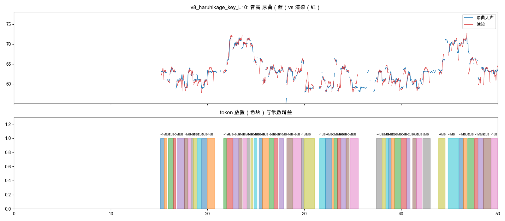 |
v8_haruhikage_keydown_L10卡点 + 素世变慢降调 | λ_N=10，293 个音效（掐断 198，降调 89，他人 0） 起音在 ±30 ms 内 44%，晚于 30 ms 20%，早于 30 ms 20% 音高 ±50 音分 61%，该唱在唱 80% 低音区（MIDI<61，占 18%）覆盖 79%，准 57% | 人声干声 混音 逐音效碎片 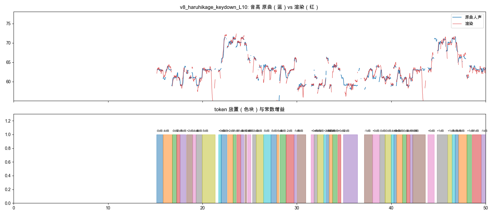 |
v8_haruhikage_keydownlow_L10卡点 + 素世变慢降调 + 低音借他人 | λ_N=10，285 个音效（掐断 189，降调 66，他人 20） 起音在 ±30 ms 内 44%，晚于 30 ms 21%，早于 30 ms 19% 音高 ±50 音分 61%，该唱在唱 81% 低音区（MIDI<61，占 18%）覆盖 81%，准 60% | 人声干声 混音 逐音效碎片 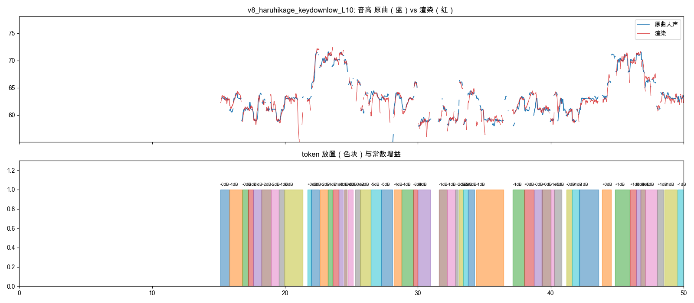 |
v8_haruhikage_keydownlow_L30卡点 + 素世变慢降调 + 低音借他人 | λ_N=30，166 个音效（掐断 107，降调 52，他人 12） 起音在 ±30 ms 内 31%，晚于 30 ms 21%，早于 30 ms 26% 音高 ±50 音分 57%，该唱在唱 70% 低音区（MIDI<61，占 18%）覆盖 73%，准 55% | 人声干声 混音 逐音效碎片 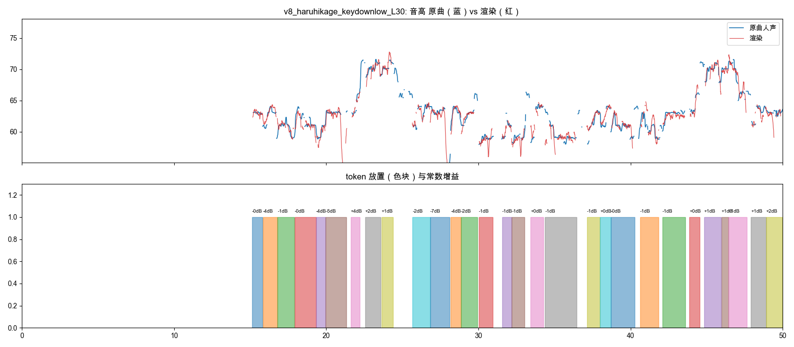 |
码本 = 长崎素世的原声台词（1823 句，只在音节边界裁剪，至少保留有声部分的 70%）。每个 token = 用哪句、放在哪、裁哪段、乘多大常数增益；解码就是直接相加，只有 5 ms 淡入淡出。损失逐帧对原曲人声计算：音高（两边都有声的帧，滑音/倚音处权重低）+ 增益闭式解后的响度残差 + 有声/无声错配，外加 λ_N·token 数 + 裁剪代价；用分段 Viterbi 动态规划精确求解。器乐是原曲分离出的伴奏，比人声低 6 dB。
原曲 原曲人声 器乐
| λ_N | token 数 | token 中位时长 | 音高 ±50 音分 | ±100 音分 | 该唱在唱 | 不该唱在响 | 用到台词数 |
|---|---|---|---|---|---|---|---|
| 0 | 375 | 0.54 秒 | 60% | 85% | 72% | 9% | 115 |
| 3 | 345 | 0.54 秒 | 60% | 85% | 73% | 9% | 107 |
| 6 | 325 | 0.56 秒 | 59% | 85% | 72% | 9% | 101 |
| 10 | 293 | 0.57 秒 | 59% | 84% | 72% | 9% | 93 |
| 15 | 263 | 0.65 秒 | 59% | 84% | 70% | 9% | 90 |
| 20 | 234 | 0.76 秒 | 57% | 82% | 69% | 9% | 86 |
| 30 | 180 | 0.83 秒 | 54% | 79% | 64% | 8% | 77 |
上表是按解码结果直接算的预测值；下面渲染行里的指标是对渲染音频重新做音高检测得到的实测值。
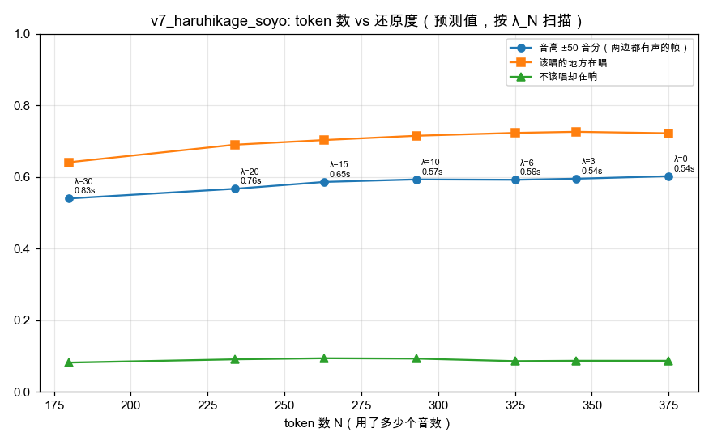
| 渲染 | 实测指标 | 试听 |
|---|---|---|
v7_haruhikage_soyo_L0λ_N=0 | 375 个 token，中位 0.54 秒，115 句台词 音高 ±50 音分 58%，±100 83%，中位 39.2 音分 该唱在唱 80%，不该唱在响 14% 起点 F1 0.391，强弱相关 0.555 增益中位 ±2.1 dB，平均裁掉 6% | 人声干声 人声（轻混响） 混音 逐 token 碎片（素材 / 原曲 / 渲染） 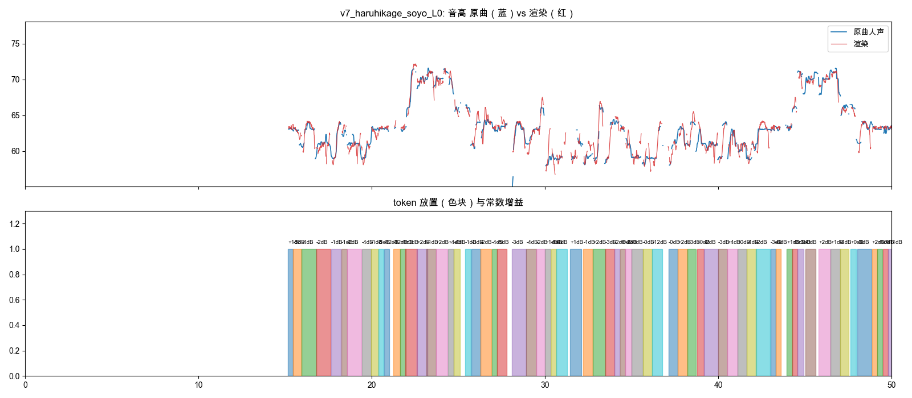 |
v7_haruhikage_soyo_L10λ_N=10 | 293 个 token，中位 0.57 秒，93 句台词 音高 ±50 音分 57%，±100 82%，中位 40.3 音分 该唱在唱 79%，不该唱在响 14% 起点 F1 0.354，强弱相关 0.433 增益中位 ±1.9 dB，平均裁掉 9% | 人声干声 人声（轻混响） 混音 逐 token 碎片（素材 / 原曲 / 渲染） 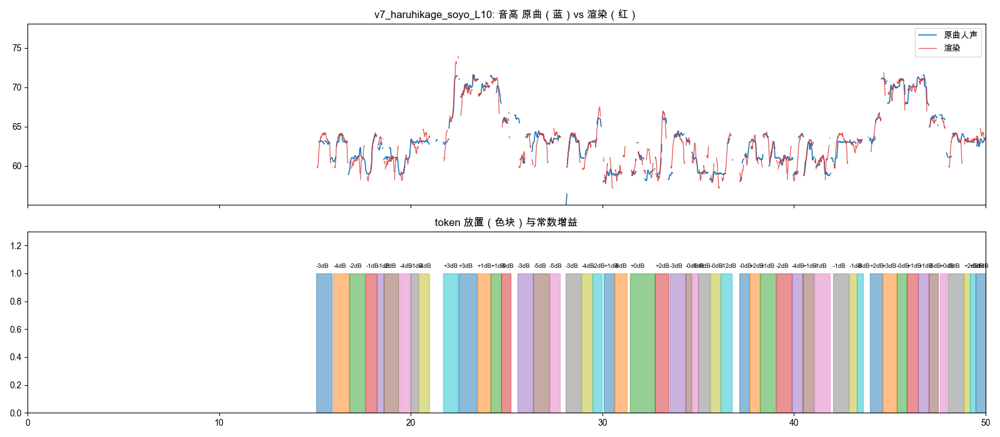 |
v7_haruhikage_soyo_L30λ_N=30 | 180 个 token，中位 0.83 秒，77 句台词 音高 ±50 音分 52%，±100 76%，中位 47.3 音分 该唱在唱 71%，不该唱在响 11% 起点 F1 0.309，强弱相关 0.364 增益中位 ±1.7 dB，平均裁掉 9% | 人声干声 人声（轻混响） 混音 逐 token 碎片（素材 / 原曲 / 渲染） 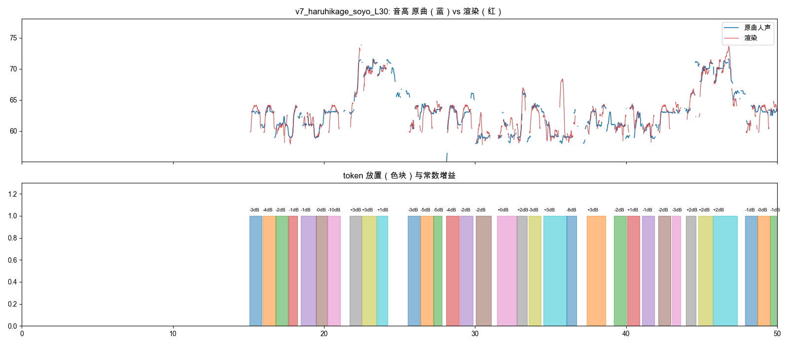 |
v7_haruhikage_soyo_vowel_L10λ_N=10，+元音匹配 | 248 个 token，中位 0.57 秒，80 句台词 音高 ±50 音分 61%，±100 84%，中位 36.3 音分 该唱在唱 64%，不该唱在响 8% 起点 F1 0.313，强弱相关 0.409 增益中位 ±1.9 dB，平均裁掉 7% | 人声干声 人声（轻混响） 混音 逐 token 碎片（素材 / 原曲 / 渲染） 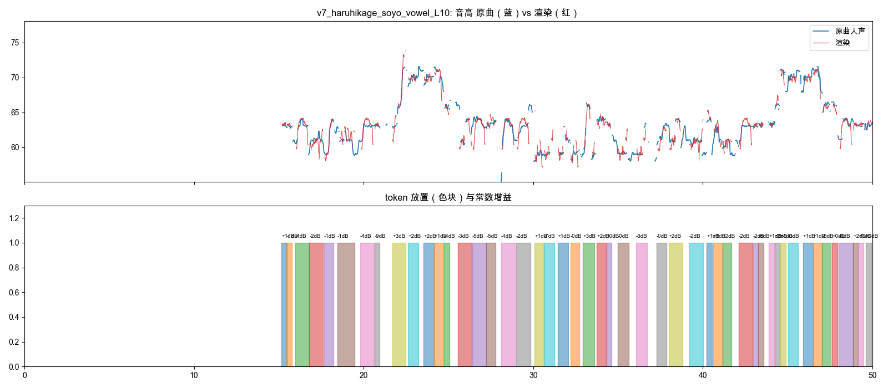 |
目标直接取原曲人声：音高正则化为调内主音（短于 0.12 秒的倚音/滑音并入相邻长音，只保留 25% 的原唱偏差），按音节切分；素材单元是长崎素世台词里的真实音节（起音辅音 + 元音）。束搜索在全曲上联合优化：目标代价（移调、时长、元音音色、素材质量）+ 衔接代价（同一句台词里相邻音节连用有奖励、短时间内重复使用有惩罚）。器乐用原曲分离出的伴奏（鼓+贝斯+其他），比人声低 6 dB。
| 渲染 | “听起来对劲”指标 | 试听 |
|---|---|---|
v5_haruhikage_soyo长崎爽世 615 音节 · B major | 简谱 9–16 小节音程吻合: 0.711 M1 主音 ±50 音分: 0.95 M2 该唱的地方在唱: 0.873 M2 不该唱却在响: 0.161 M3 音节起点吻合 F1: 0.394 M4 音符内抖动（音分）: 8.8 M5 强弱走势相关: 0.417 M6 移调中位（半音）: 0.36 M6 延长中位（倍）: 1.25 M7 整句连用比例: 0.397 M7 用到的台词数: 179 | 原曲 原曲人声 正则化目标（平滑引导音） 人声（干） 人声（轻混响） 混音（+原曲器乐 -6 dB） 器乐 逐音节碎片（素材 / 原曲 / 渲染） 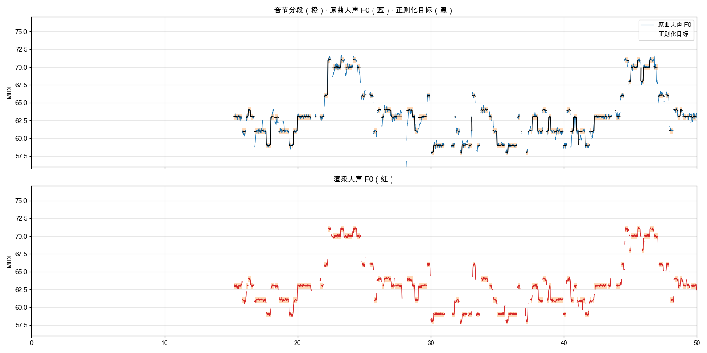 |
先把原曲人声转写成按半音量化的音符（乐句内连奏），再用一个角色的 16 个长元音组成受限码本来唱。每个音符保留起音辅音，元音用 Praat PSOLA 拉平到准确音高并延长（保留共振峰），音符之间带短滑音并互相衔接，长音加轻微延迟颤音；只有很轻的混响。先听“转写音高”确认旋律对不对，再听干声旋律。
| 渲染 | 转写 | 码本 | 旋律贴合 | 试听 |
|---|---|---|---|---|
v4_haruhikage_soyo长崎爽世 0.0–259.0 秒 | 562 音符 / 29 乐句 B major 音符中位 0.27 秒 连奏 92% 对原曲 ±50音分 83% | 16 个元音，用到 16 移调中位 0.25 半音 延长中位 ×0.82 | 音符内有声 95% 中位偏差 8.4 音分 ±50音分 96% | 原曲混音 原曲人声 转写音高（纯音） 旋律（干声） 旋律（轻混响） 混音（+贝斯 -10 dB） 码本原声（16 个元音） 逐音符碎片对照 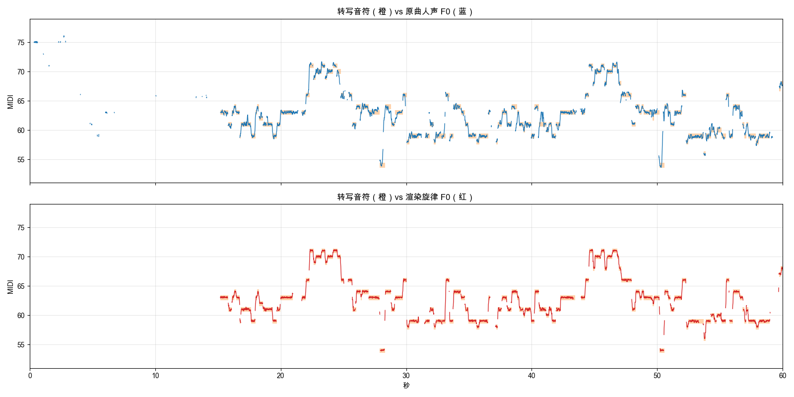 |
三层叠加、不停顿：旋律层由原曲主旋律（Melodia）切成连奏音符，每个音符由角色台词里挑出的真实元音核演唱（每乐句固定一个角色）；用 WORLD 只改基频、保留共振峰，音高偏移中位数很小，长音用元音中段来回循环延长。梗层是未经任何处理的整句台词，放在乐句间隙。伴奏是跟随原曲贝斯的合成低音，低于人声 10 dB。输出不含任何原曲音频。
| 渲染 | 音符/乐句 | 占空比 | 旋律贴合（CREPE 对目标） | 音高偏移 | 试听（先听原曲对照） |
|---|---|---|---|---|---|
v3_roundabout_anime148.0–208.0 秒 | 134 音符 / 18 乐句 音符中位 0.25 秒 梗层 4 句 | 0.813 | 中位偏差 23.5 音分 ±50音分 76% ±100音分 90% | 中位 0.12 半音 P90 0.33 半音 | 原曲混音 原曲人声轨 v3 混音 旋律层 梗层 伴奏 旋律层所用元音核（未处理原声） 梗层原声顺序对照 逐条原声对照（4 条）
chroma DTW 2.933 · MFCC DTW 0.07 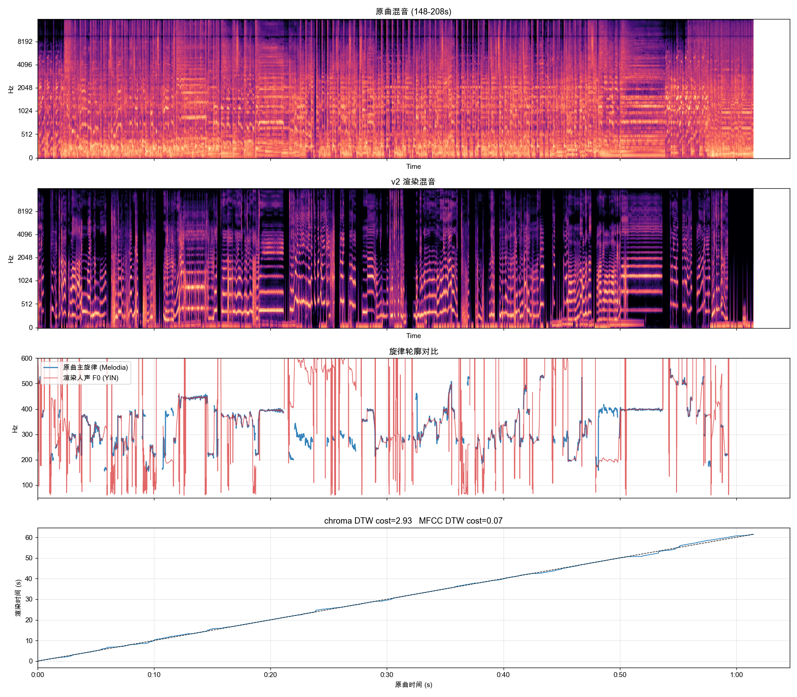 |
不再使用 MIDI 谱面。对原曲做人声/贝斯分离（demucs），从人声轨提取连续 F0 轮廓与能量包络作为渲染目标：旋律是一条连续曲线，原曲换气/间奏处渲染也留白（占空比与原曲一致），不再有"点状音符"问题。素材仍按乐句整体匹配，F0 被引导到原曲连续轮廓上；伴奏为跟随原曲贝斯轨轮廓的合成低音（-10 dB），输出不含任何原曲音频。
| 渲染 | 原曲窗口 | 乐句/素材 | 占空比 | 旋律贴合 | 试听（先听原曲对照） |
|---|---|---|---|---|---|
v2_roundabout_anime | 148.0–248.0 秒 | 32 乐句 素材中位 1.9 秒 | 原曲 0.786 渲染 0.586 | 中位偏差 15.0 音分 ±50音分 71% | 原曲混音 原曲人声轨 v2 混音 v2 人声 v2 伴奏 原声顺序对照 逐条原声对照（32 条）
chroma DTW 3.329 · MFCC DTW 0.063 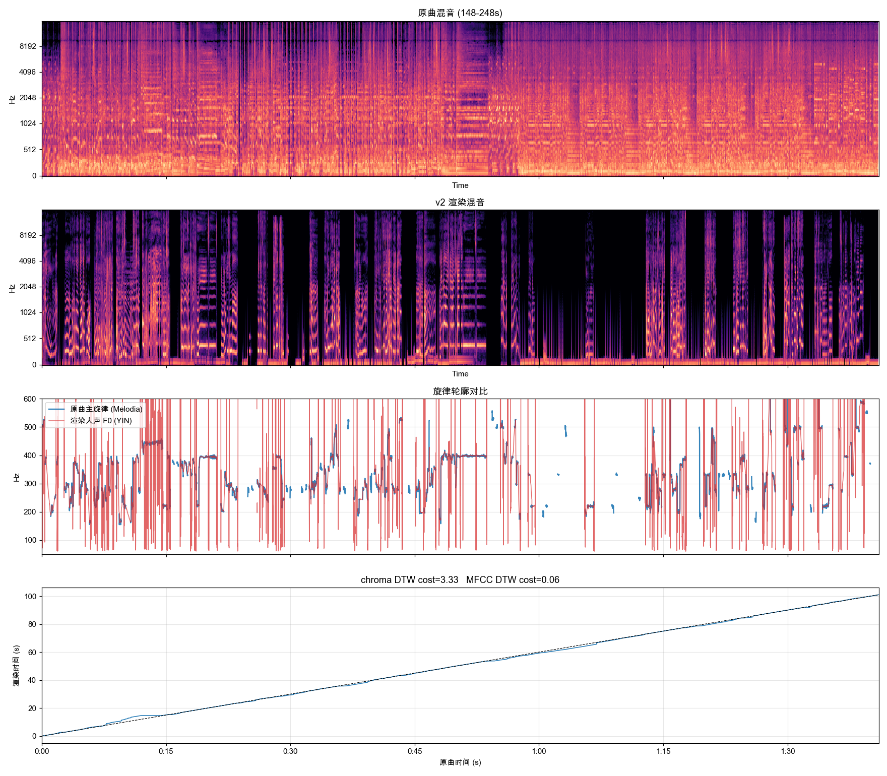 |
谱面把音乐拆成点状音符，目标本身占空比低，听感破碎；保留在此仅作对照。GPU 批处理 CREPE 提取候选轮廓，声码器把选中素材音高向乐句引导（强度 1.0）；人声/伴奏分离，伴奏 -10 dB。旧版 v1–v7（逐音符密集映射）在 legacy/。
| 渲染 | 长度 | 人声素材 | 素材时长中位 | 旋律引导 | 伴奏 | 试听 |
|---|---|---|---|---|---|---|
v1_roundabout_animeRoundabout · MyGO / Ave Mujica | 120.0 秒 | 28 条 / 174 音 0.233 条每秒 | 2.845 秒 | 强度 1.0 中位偏差 5.7 音分 ±50音分 72% | 36 音 -11.01 dB | 目标旋律 原声顺序对照 混音 人声 伴奏 逐条原声对照（28 条）
MFCC match 0.9618 Chroma match 0.9013 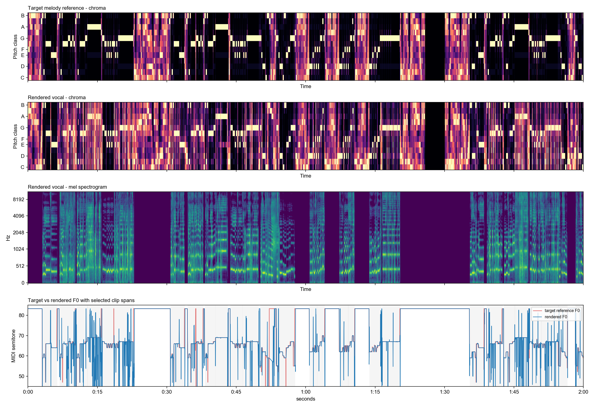 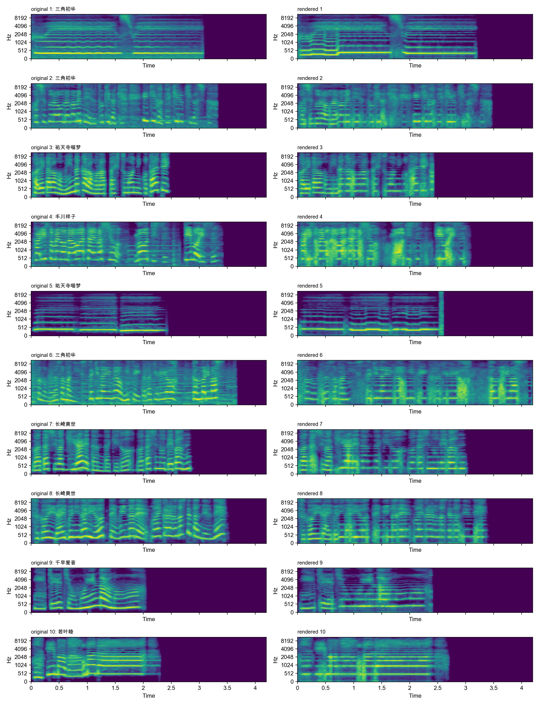 |
v1_roundabout_anime_singyRoundabout · MyGO / Ave Mujica | 120.0 秒 | 28 条 / 174 音 0.233 条每秒 | 2.805 秒 | 强度 1.0 中位偏差 5.4 音分 ±50音分 72% | 36 音 -10.98 dB | 目标旋律 原声顺序对照 混音 人声 伴奏 逐条原声对照（28 条）
MFCC match 0.957 Chroma match 0.9 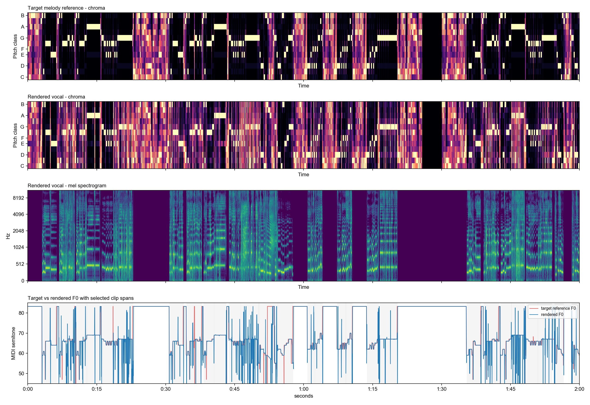 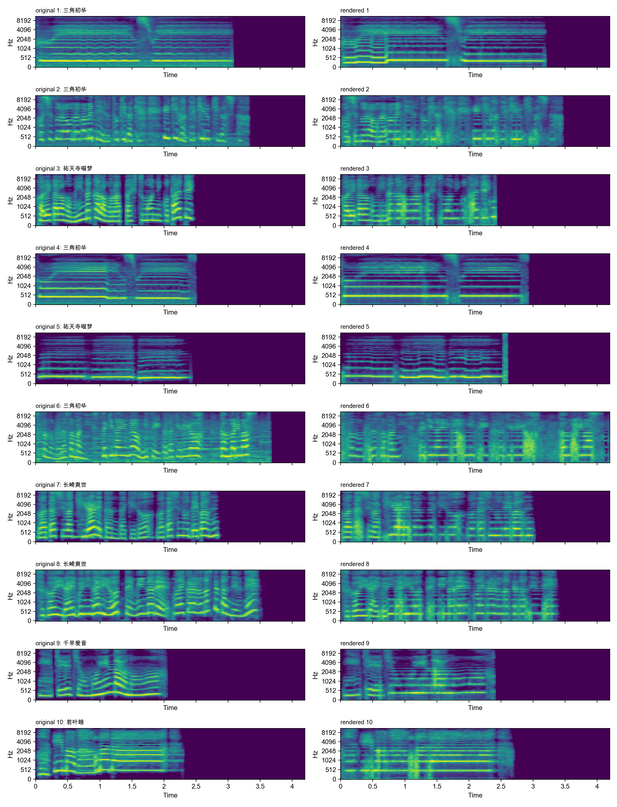 |
旧结果：legacy/out/；旧引擎：legacy/engine/。